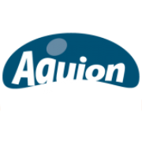

Water Ionizer
AQUION Premium 7
AQUION Premium 7 Wasserionisierer aus der Premium-Serie zur Erzeugung unterschiedlicher Wasserstufen.
Preis auf Anfrage
Technische Daten
| Produkttyp | Wasserionisierer |
| Elektroden | 7 |
| Serie | AQUION Premium |
| Bedienung | Elektronisch |
Datenhinweis
Die Angaben stammen aus öffentlich zugänglichen Hersteller- und Produktunterlagen. Nicht veröffentlichte Werte wurden nicht geschätzt. Änderungen und Modellvarianten sind möglich.